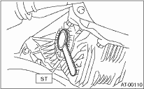
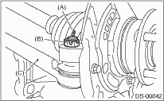
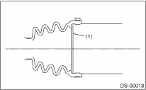
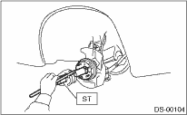
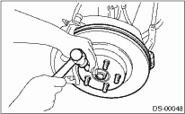

1. Using the ST, replace the differential side retainer oil seal with a new seal.
| ST 18675AA000 | DIFFERENTIAL SIDE OIL SEAL INSTALLER |
CAUTION:
Always replace the differential side retainer oil seal with a new seal after removing the drive shaft.

2. Insert the front drive shaft into the front axle.
3. Tighten the axle nut temporarily.
4. Using the ST, install the front drive shaft to the transmission while protecting the differential side retainer oil seal.
| ST 28399SA010 | OIL SEAL PROTECTOR |

5. Install the ball joint to the front axle.
Tightening torque:
50 N·m (5.1 kgf-m, 37 ft-lb)
6. Install the stabilizer link.
Tightening torque:
45 N·m (4.6 kgf-m, 33 ft-lb)

7. Install the tie-rod end.
Tightening torque:
27 N·m (2.75 kgf-m, 19.9 ft-lb)
CAUTION:
When connecting the tie-rod end, do not hit the cap at bottom of tie-rod end with a hammer.
8. Tighten the castle nut to specified torque and tighten further within 60° until the pin hole is aligned with the slot in the nut. Bend the cotter pin to lock.

|
(A) |
Cotter pin |
|
(B) |
Castle nut |
|
(C) |
Tie-rod end |
9. Check whether or not the AARi retainer has moved from its prescribed position.

|
(1) |
Retainer |
10. Using ST1 and ST2, pull the front drive shaft into the required position.
| ST1 922431000 | AXLE SHAFT INSTALLER |
| ST2 927390000 | ADAPTER |

11. While pressing the brake pedal, tighten the new axle nut to the specified torque.
Tightening torque:
220 N·m (22.4 kgf-m, 162 ft-lb)
CAUTION:
Be sure to tighten axle nut to specified torque. Do not overtighten it as this may damage the wheel bearing.
12. After tightening the axle nut, lock it securely.

13. Attach the front vehicle height sensor bracket to the front cross member using bolts and clips. (HID model, right side only)
Tightening torque:
7.5 N·m (0.8 kgf-m, 5.5 ft-lb)
14. Attach the front vehicle height sensor bracket to the front transverse link. (HID model, right side only)
Tightening torque:
7.5 N·m (0.8 kgf-m, 5.5 ft-lb)
15. Connect the connector to the front vehicle height sensor. (HID model, right side only)
16. Install the wheel and tighten the wheel nuts to specified torque.
Tightening torque:
100 N·m (10.2 kgf-m, 73.8 ft-lb)
17. Pour in the transmission gear oil. (MT model)
18. Pour in the differential gear oil. (AT model)
19. Connect the battery ground cable to the battery.
20. Inspect the wheel alignment and adjust if necessary.
21. Re-initialize the auto headlight beam leveler system. (Model with HID)